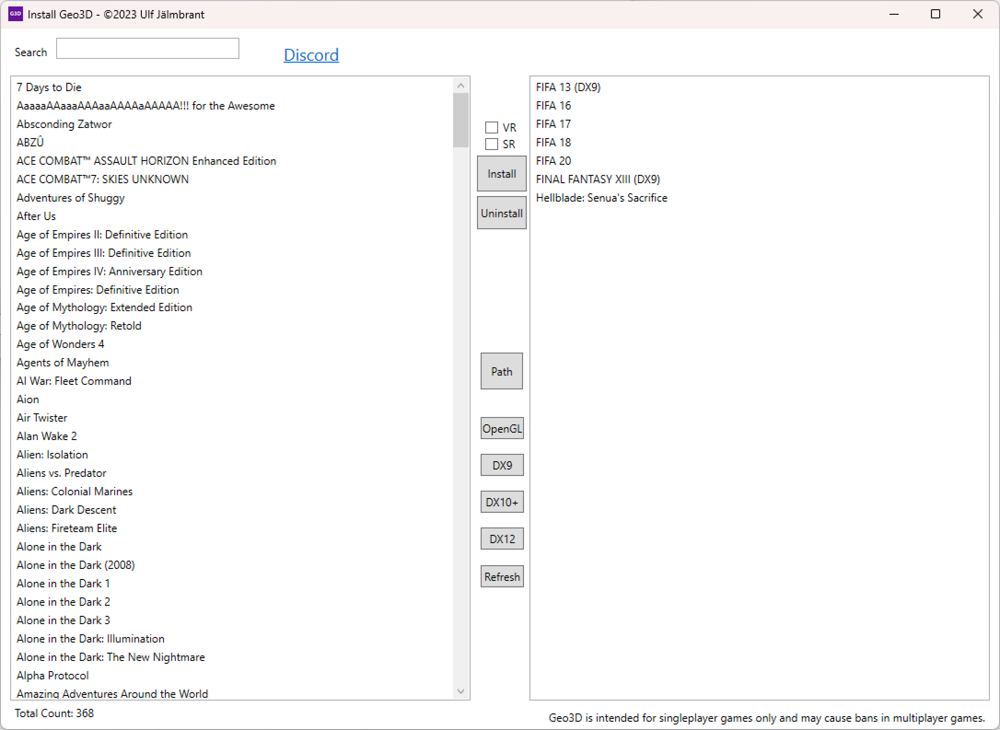

Geo3D Geometric 3D since 2022
ReShade addon since ReShade 5
Compatible with DirectX 9-12 32-64 bit mode
Installation is more complex than most addons
It consists of multiple parts best done with my installer
The installer can be downloaded from the latest Geo3D home. Installer

I wouldn't call it easy to use. Significant amount of time is needed inside PATHs.txt and FOLDERs.txt
It is made both to recognize almost all games as I have no idea about future games.
At my peak I had almost 2000 games installed so it became a bit sluggish the more installed games you added.
The main purpose of the installer is to install more games. One way is the install button the second way is to double click in the left list
Uninstall preserves every thing about a fix mainly reshade.ini and ShaderFixesGeo3D as well as ShaderCacheGeo3D.
Double-clicking on the right opens up the main exe folder for a game where Geo3D etc is installed. So to modify reshade.ini it's there.
Path button just shows the path on the game on the left. OpenGL is not yet present in Geo3D hoping to add it soon.
DX9 and DX10+ are exclusive and hard to get wrong. Sometimes DX12 is needed but it is obvious when DX10+ fails.
Some of my plans but alone the speed is limited.
Currently looking for bugs in Forza Horizon 5
Trying to add Forza Motorsport
Trying to inject ReShade & CO into Dead or Alive 6
Adding a bunch of FIFA games
Attempting the beginning of Final Fantasy XIII
Red Dead Redemption 1 & 2 likely to follow and fail